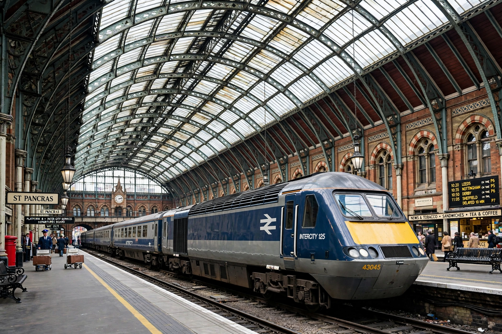

| Rail transport in Great Britain | |
|---|---|
 | |
| Infrastructure manager | Network Rail |
| Track length | c. 15,900 km (9,900 mi) |
| Stations | c. 2,580 |
| Loading gauge | Standard gauge 1,435 mm |
| Electrification | 25 kV AC overhead; 750 V DC third rail (south-east) |
Rail transport in Great Britain is the oldest national railway system in the world, beginning with the Stockton and Darlington Railway (1825) and the Liverpool and Manchester Railway (1830). The network, operated over infrastructure managed by Network Rail, carries well over a billion passenger journeys a year and is one of the most intensively used in Europe.
Private companies built a dense Victorian network that was grouped into the "Big Four" companies in 1923, nationalised as British Rail in 1948, pruned by the Beeching cuts of the 1960s, and privatised between 1994 and 1997 under a franchising model. The 21st century has seen record passenger numbers, major electrification and capacity schemes, the opening of High Speed 1 to the Channel Tunnel, and ongoing plans to bring operations back into public ownership under Great British Railways.
London's great termini — Waterloo, Euston, King's Cross, Paddington, London Bridge and others — anchor radial main lines including the East Coast and West Coast Main Lines. Inter-city services link the major cities, while regional, suburban and London Underground and Overground networks serve the capital. Famous trains include the Flying Scotsman service to Edinburgh and Eurostar services to Paris and Brussels.